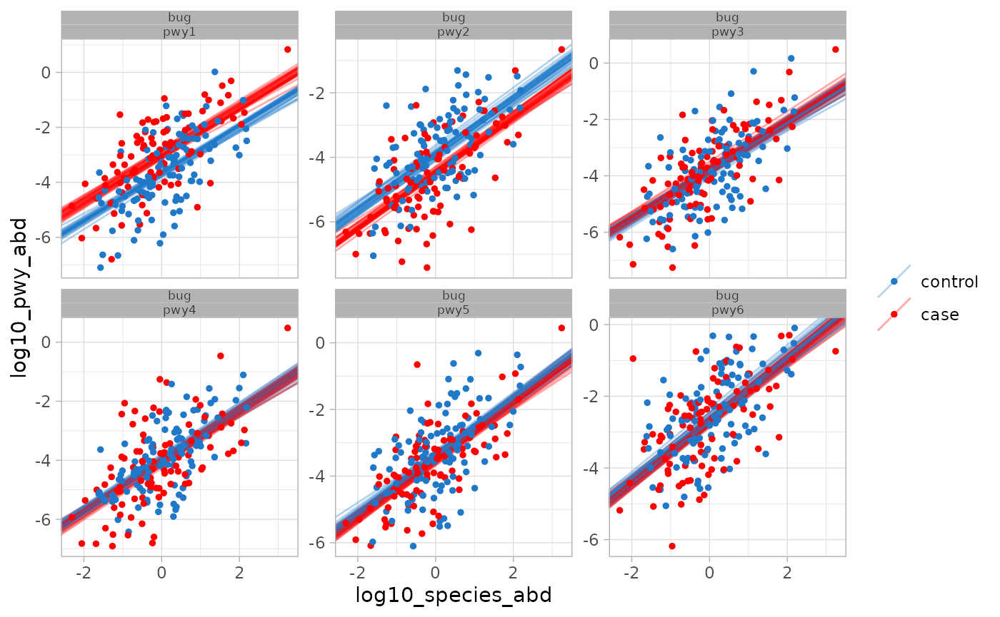

Pathway Ranef
Pathway random effects model
The pathway model uses a random effects model applied to the pathways in a single bug. It looks for pathways that differ substantially in abundance between two groups while accounting for the correlation with species abundance. Using the standard lme4 formula syntax, the model is:
log10(pwy_abd) \sim log10(species_abd) + (1|pwy) + (0 + group|pwy) + interceptThe relevant functions to fit the model are anpan_pwy_ranef() and anpan_pwy_ranef_batch().
A few notes on this model:
- Because we’re working with log abundances, zeros are discarded. (side note: we once tried a censored model that didn’t discard zeros but instead modeled them as unknown low values. It added a lot of complexity and made no practical difference in the results.)
- The relationship between species abundance and pathway abundance is measured globally using data from all pathways in the bug.
- each pathway has its own intercept (that’s the
(1|pwy)term), but these intercepts are partially pooled across pathways- These terms come from a \(`Normal(0, \sigma_{int})`\) distribution. The prior on \(`\sigma_{int}`\) is a \(`t_{5, 0, 2.5}`\) distribution
- each pathway has its own group effect (that’s the
(0+group|pwy)term). These are also pooled across pathways, but they are independent of the pathway intercepts (that’s what that0is signalling).- These terms come from a \(`Normal(0, \sigma_{effects})`\) distribution. The prior on \(`\sigma_{effects}`\) is a relatively aggressive \(`exponential(3)`\) distribution.
- There are some additional weak priors on several parameters. The best place to inspect these in the model code itself in the installation folder
anpan/stan/pwy_ranef.stan- If you don’t know where this file is located on your system, you can use
system.file('stan', 'pwy_ranef.stan', package = 'anpan')to find it.
- If you don’t know where this file is located on your system, you can use
Some setup:
library(anpan)
library(data.table)
library(ggplot2)
library(tibble)
library(dplyr)
library(ape)
options(digits = 2)Simulate data
In this section we’ll simulate pathway level data. For the sake of simplicity we’ll simulate only 6 pathways, though many bugs usually have sufficient data for a dozen or more. Throughout this section we’ll include “log10_” in the name of some variables because that’s how they’ll be calculated in practice (by taking logarithms of real abundance measurments), even though we’re not calculating any logarithms here.
First we generate the log10 species abundance with a simple call to rnorm(n):
n = 200
n_pwy = 6
set.seed(123)
species_abd_df = data.table(log10_species_abd = rnorm(n),
group = sample(c("case", "control"),
size = n,
replace = TRUE),
sample_id = paste0("sample", 1:n))Here we generate the true effects of the pathway intercepts/effects. We apply a true pathway effect of +/-0.67 to the first two pathways (these will be the effects we try to detect) and 0 to everything else.
pwy_true_params = data.table(pwy = paste0("pwy", 1:n_pwy),
pwy_intercept = rnorm(n_pwy),
pwy_group_effect = c(c(0.67, -0.67),
rep(0, n_pwy - 2)))
pwy_true_params## pwy pwy_intercept pwy_group_effect
## <char> <num> <num>
## 1: pwy1 -0.72 0.67
## 2: pwy2 -0.75 -0.67
## 3: pwy3 -0.94 0.00
## 4: pwy4 -1.05 0.00
## 5: pwy5 -0.44 0.00
## 6: pwy6 0.33 0.00Then we generate the log pathway abundances. Some things to note:
- We subtract 3 from the lo10_pwy_abd mean as a global intercept just because real pathway abundance measurements are usually pretty low
- We put a 0.85 global slope on the linear relationship between pathway abundance and species abundance. This implies that the pathways in the species aren’t detected as efficiently as the species itself.
- The true pathway effects get applied to the cases in the last line. After
mean =, the four terms in the sum are the four components of the linear predictor in the model, i.e.- the global intercept (-3)
- the global
log10_pwy ~ log10_speciesrelationship (0.85) - the pathway level intercepts
- the pathway effects applied to cases
pwy_grid = expand.grid(sample_id = paste0("sample", 1:n),
pwy = paste0("pwy", 1:n_pwy)) |>
as.data.table()
bug_pwy_dat = pwy_grid[species_abd_df, on = "sample_id"][pwy_true_params, on = "pwy"]
bug_pwy_dat[, log10_pwy_abd := rnorm(n * n_pwy,
mean = -3 +
0.85 * log10_species_abd +
pwy_intercept +
(group == "case") * pwy_group_effect)]Let’s look at a plot of the simulated data:
bug_pwy_dat |>
ggplot(aes(log10_species_abd,
log10_pwy_abd)) +
geom_point(aes(color = group), size = 1) +
facet_wrap("pwy") +
scale_color_manual(values = c("case" = "red",
"control" = "lightblue")) +
theme_bw()
Both effects are fairly visually obvious. We’ll see how well the model can detect these effects in the next section.
Fit the pathway model
We first create a 0/1 indicator variable, then fit the model with anpan_pwy_ranef():
bug_pwy_dat[, group01 := as.numeric(group == "case")]
pwy_result = anpan_pwy_ranef(bug_pwy_dat = bug_pwy_dat,
group_ind = "group01")Our result is a data frame with columns containing the fit and the summary. Let’s look at the summary:
pwy_result$summary_df[[1]]## # A tibble: 17 × 14
## pwy hit variable mean median sd mad q5 q95 q1
## <chr> <lgl> <chr> <dbl> <dbl> <dbl> <dbl> <dbl> <dbl> <dbl>
## 1 NA NA species_beta… 0.854 0.855 0.0307 0.0301 0.804 0.906 0.785
## 2 NA NA sigma 1.01 1.01 0.0200 0.0202 0.975 1.04 0.963
## 3 NA NA sd_pwy_int 0.686 0.619 0.284 0.220 0.367 1.24 0.310
## 4 NA NA sd_pwy_effec… 0.426 0.398 0.146 0.128 0.242 0.704 0.201
## 5 pwy1 NA pwy_intercep… -0.105 -0.104 0.291 0.264 -0.586 0.380 -0.823
## 6 pwy2 NA pwy_intercep… -0.346 -0.345 0.295 0.265 -0.823 0.134 -1.06
## 7 pwy3 NA pwy_intercep… -0.271 -0.270 0.296 0.267 -0.759 0.219 -1.00
## 8 pwy4 NA pwy_intercep… -0.402 -0.403 0.293 0.261 -0.886 0.0735 -1.14
## 9 pwy5 NA pwy_intercep… 0.180 0.181 0.291 0.257 -0.289 0.669 -0.538
## 10 pwy6 NA pwy_intercep… 0.964 0.959 0.294 0.268 0.502 1.46 0.233
## 11 pwy1 TRUE pwy_effects[… 0.684 0.683 0.143 0.149 0.454 0.918 0.360
## 12 pwy2 TRUE pwy_effects[… -0.539 -0.539 0.142 0.141 -0.775 -0.309 -0.882
## 13 pwy3 FALSE pwy_effects[… 0.0512 0.0518 0.133 0.133 -0.165 0.270 -0.256
## 14 pwy4 FALSE pwy_effects[… -0.0688 -0.0701 0.133 0.130 -0.289 0.143 -0.377
## 15 pwy5 FALSE pwy_effects[… -0.138 -0.137 0.134 0.133 -0.356 0.0742 -0.448
## 16 pwy6 FALSE pwy_effects[… -0.107 -0.109 0.130 0.127 -0.323 0.112 -0.403
## 17 NA NA global_inter… -3.57 -3.57 0.284 0.248 -4.05 -3.10 -4.26
## # ℹ 4 more variables: q99 <dbl>, rhat <dbl>, ess_bulk <dbl>, ess_tail <dbl>We can see in the hit column that pwy1 and pwy2 were both correctly called as hits.
Examine the results
There are two functions for plotting the results of the pathway model. plot_pwy_ranef_intervals() compactly plots 98% intervals for pathways (faceted by bug as appropriate). It will automatically highlight “hits” (as defined by the conditions in the help documentation of anpan_pwy_ranef()) in red.
plot_pwy_ranef_intervals(pwy_result)
The next plotting function is plot_pwy_ranef(). This creates a plot of the data overlaid with posterior draws of the estimated species:pwy relationship by pathway.
plot_pwy_ranef(bug_pwy_dat = bug_pwy_dat,
pwy_ranef_res = pwy_result,
group_ind = "group01",
group_labels = c("control", "case"))## Warning in plot_pwy_ranef(bug_pwy_dat = bug_pwy_dat, pwy_ranef_res =
## pwy_result, : Couldn't determine the bug name from inputs, setting a
## placeholder.
You can see the clear visual separation between the two groups in the first two bugs, while the draws from the other four pathways tend to overlap.